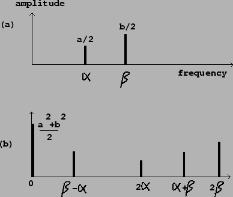

It is frequently desirable to use the time-varying power of an incoming signal to trigger or control a musical process. To do this, we will need a procedure for measuring the power of an audio signal. Since most audio signals pass through zero many times per second, it won't suffice to take instantaneous values of the signal to measure its power; instead, we must calculate the average power over an interval of time long enough that its variations won't show up in the power estimate, but short enough that changes in signal level are quickly reported. A computation that provides a time-varying power estimate of a signal is called an envelope follower.
The output of a low-pass filter can be viewed as a moving average of its input.
For example, suppose we apply a normalized one-pole low-pass filter with
coefficient  , as in Figure 8.21, to an incoming signal
, as in Figure 8.21, to an incoming signal  .
The output (call it y[n]) is the sum of the delay output times
.
The output (call it y[n]) is the sum of the delay output times  , with
the input times
, with
the input times  :
:
For more insight into the design of a suitable low-pass filter for an envelope
follower, we analyze it from the point of view of signal spectra. If, for
instance, we put in a real-valued sinusoid:
The situation for a signal with several components is similar. Suppose the
input signal is now,
|  |
Envelope followers may also be used on noisy signals, which may be thought of as signals with dense spectra. In this situation there will be difference frequencies arbitrarily close to zero, and filtering them out entirely will be impossible; we will always get fluctuations in the output, but they will decrease proportionally as the filter's passband is narrowed.
Although a narrower passband will always give a cleaner output, whether for discrete or continuous spectra, the filter's settling time will lengthen proportionally as the passband is narrowed. There is thus a tradeoff between getting a quick response and a smooth result.